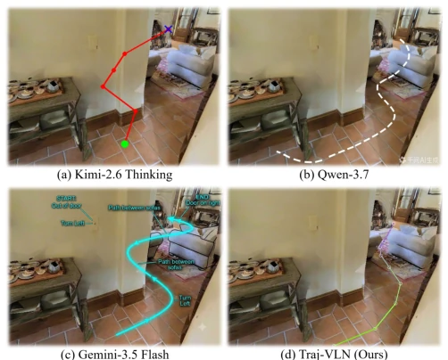
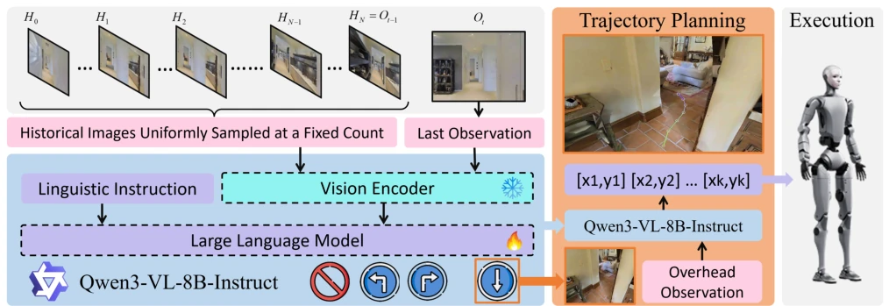
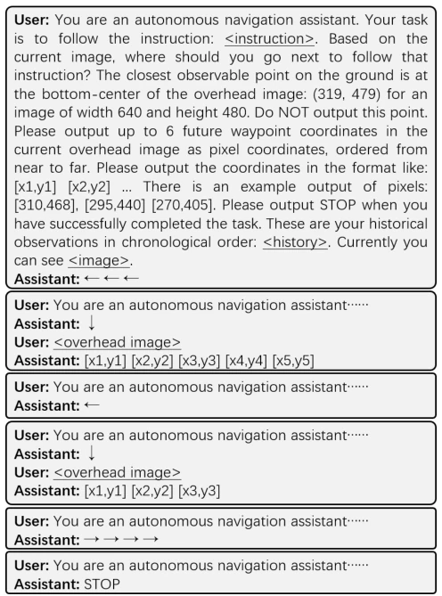
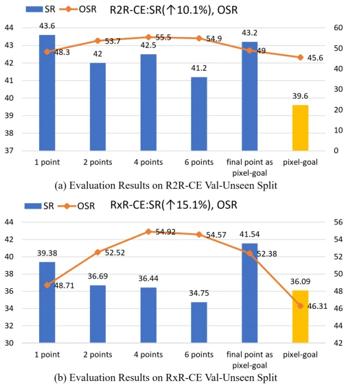

Traj-VLN: Learning Pixel-Space Interaction via Autoregressive Trajectory Generation
Changfei Fu, Guangcheng Chen, Wenjun Xu, Hong Zhang abspdf
论文点评Review
这篇论文给 VLM 导航开了个“新路子”，与其让模型在 3D 空间里晕头转向，不如让它直接在 2D 像素上画线。虽然听起来像是“用画画代替走路”，但效果确实不错，甚至干翻了那些硬塞深度信息的模型。不过，冻结视觉编码器虽然省算力，但会不会让模型变成“瞎子”？另外，依赖顶视图（overhead view）这种特殊视角，实际部署时摄像头得长个“天眼”，这成本可不低。总的来说，是个聪明的“曲线救国”方案，用 2D 轨迹隐式解决 3D 导航，但别指望它能直接上真机，仿真器里的表现才是硬道理。这种自回归生成轨迹的方式，本质上是在模仿人类思考路径的过程，比直接猜终点更靠谱。
This paper opens a "new path" for VLM navigation; rather than letting the model get disoriented in 3D space, it is better to let it draw lines directly on 2D pixels. Although it sounds like "replacing walking with drawing", the effect is indeed good, even surpassing models that forcibly inject depth information. However, although freezing the visual encoder saves compute, will it make the model "blind"? Additionally, relying on special perspectives like overhead view means cameras need to grow a "heavenly eye" during actual deployment, which is not cheap. Overall, it is a smart "roundabout" solution, using 2D trajectories to implicitly solve 3D navigation, but do not expect it to go directly to real machines; performance in simulators is the hard truth. This autoregressive trajectory generation method essentially imitates the process of humans thinking about paths, which is more reliable than directly guessing the endpoint.
研究动机Motivation
VLM 预训练数据多是 2D 对话，缺乏 3D 感知先验 [8][9]。现有方法要么直接预测动作 [1][2][4]，要么引入深度信息 [7]，但深度对齐难且 VLM 没学过。像素目标（Pixel-Goal）虽好 [11][12]，但缺乏过程推理。本文认为轨迹生成是像素目标的 CoT，能更好理解空间交互。现有 VLN 模型大多基于 POMDP，直接预测动作或单点目标，忽略了导航的过程性。VLM 缺乏对 3D 物理布局的感知，导致规划困难。引入深度信息往往需要额外编码器，效果有限。因此，利用 VLM 熟悉的 2D 像素空间进行轨迹生成，是规避 3D 感知短板的有效策略。
VLM pretraining data is mostly 2D dialogue, lacking 3D perception priors [8][9]. Existing methods either directly predict actions [1][2][4] or introduce depth information [7], but depth alignment is difficult and VLMs have not learned it. Pixel-Goals are good [11][12], but lack process reasoning. This paper argues that trajectory generation is the CoT of pixel goals, enabling better understanding of spatial interactions. Existing VLN models are mostly based on POMDP, directly predicting actions or single-point goals, ignoring the process nature of navigation. VLMs lack perception of 3D physical layouts, leading to planning difficulties. Introducing depth information often requires additional encoders, with limited effectiveness. Therefore, utilizing the 2D pixel space familiar to VLMs for trajectory generation is an effective strategy to avoid 3D perception shortcomings.

Fig. 1: Qualitative comparison of Traj-VLN with general-purpose multi-model large language models (MLLMs). It’s demonstrated that the popular MLLMs can hardly draw a reasonable trajectory to interact with the 3D environments. With our fine-tuning supervised by pixel-space trajectories, the VLMs achieve the interactions in 2D image plane by learning to autoregressively generate a sequence of pixel coordinates. The prompt used for the general-purpose MLLMs is “please draw a trajectory on the image to follow the instruction: get out of the door and turn left, go through the way between the sofas, pass the fireplace to reach the door on the right.” position coordinate to another, VLN emphasizes the process of 3D spatial interactions with the environment [1]. Driven by the powerful generalizati
方法Method
基于 Qwen3-VL-8B，采用两阶段对话框架。第一阶段，模型根据当前观测输出转向动作或“STOP”；若输出“↓”，则进入第二阶段，输入顶视图（overhead view）。第二阶段中，模型自回归生成一系列像素坐标序列，在顶视图上描绘轨迹。数据构建上，将未来位姿投影到当前顶视图生成轨迹监督信号，过滤遮挡点。训练时冻结视觉编码器，仅微调 LLM 和投影层，大幅降低计算成本。这种设计让模型在熟悉的 2D 空间内学习 3D 交互的投影，无需显式 3D 推理。坐标序列的文本格式与预训练语料对齐，便于模型理解。自回归机制让前一步预测成为后一步输入，形成类似思维链（CoT）的推理过程，增强了路径规划的连贯性。此外，通过深度图将像素坐标转换为 3D 物理路径，实现了从 2D 生成到 3D 执行的闭环。
Based on Qwen3-VL-8B, adopting a two-stage dialogue framework. In the first stage, the model outputs turning actions or "STOP" based on current observations; if "↓" is output, it enters the second stage, inputting overhead view. In the second stage, the model autoregressively generates a series of pixel coordinate sequences, drawing trajectories on the overhead view. In data construction, future poses are projected onto the current overhead view to generate trajectory supervision signals, filtering occluded points. During training, the visual encoder is frozen, only fine-tuning the LLM and projection layer, significantly reducing computational costs. This design allows the model to learn the projection of 3D interactions within the familiar 2D space, without explicit 3D reasoning. The text format of coordinate sequences aligns with pretraining corpora, facilitating model understanding. The autoregressive mechanism makes the previous step prediction the input for the next step, forming a reasoning process similar to Chain-of-Thought (CoT), enhancing path planning coherence. Additionally, pixel coordinates are converted to 3D physical paths via depth maps, achieving a closed loop from 2D generation to 3D execution.

Fig. 2: The framework of Traj-VLN. At each time step, Traj-VLN takes as input a language instruction, the current observation, and a set of uniformly sampled historical observations. Based on Qwen3-VL, Traj-VLN fully fine-tunes the LLM and the projection layer while keeping the vision encoder frozen. In the first conversation stage , Traj-VLN is fine-tuned to output either turning actions or “STOP”. If Traj-VLN outputs “↓” in the first stage, it enters the second stage and receive an overhead observation. During the second stage, Traj-VLN is fine-tuned to autoregressively generate a sequence of pixel coordinates on the overhead image. Supervised by the pixel-space trajectories, Traj-VLN achieves interactions with the image regions by delineating a trajectory from near to far.

Fig. 3: An example of conversations during a navigation task. The placeholders “ <instruction>”, “<image>”, “<overhead image>”, and “<history>” are dynamically replaced with corresponding textual and visual content to form the input sequence, which is subsequently tokenized according to the VLM’s vocabulary.
实验Experiments
在 R2R-CE 和 RxR-CE 数据集上测试，对比 JanusVLN [1], InternVLA-N1 [11], Goal2Pixel [12] 等 SOTA 方法。指标包括 SR, SPL, NE 等。Traj-VLN 在 SR 上达到 58.4% (R2R) 和 52.6% (RxR)，优于 InternVLA-N1。消融实验显示，轨迹监督显著优于单点像素目标监督。将轨迹终点作为目标评估时，性能依然提升，验证了轨迹生成作为 CoT 的有效性。尽管训练数据量少于部分基线，但性能更优，证明了方法的高效性。
Tested on R2R-CE and RxR-CE datasets, comparing JanusVLN [1], InternVLA-N1 [11], Goal2Pixel [12] and other SOTA methods. Metrics include SR, SPL, NE, etc. Traj-VLN achieves 58.4% (R2R) and 52.6% (RxR) on SR, superior to InternVLA-N1. Ablation experiments show trajectory supervision significantly outperforms single-point pixel goal supervision. When evaluating with trajectory endpoints as goals, performance still improves, validating the effectiveness of trajectory generation as CoT. Although training data volume is less than some baselines, performance is better, proving the method's efficiency.

Fig. 4: Comparison of SR and OSR between pixel-goal and Traj- VLN at different numbers of execution steps per trajectory pre- diction. The number of pixels indicates the number of waypoints along the trajectory to execute. “final pixel as pixel-goal” refers to treating the final waypoint along the trajectory as the pixel-goal for evaluating Traj-VLN using the same evaluation scripts as pixel-goal. The results are obtained using the same models as those reported in Table II.